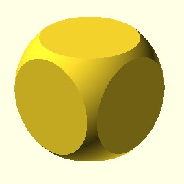

Creates the intersection of all child nodes. This keeps the overlapping portion (logical and). Only the area which is common or shared by all children is retained. May be used with either 2D or 3D objects, but don't mix them.
intersection() (2D_figure, 2D_figure)
intersection() (3D_figure, 3D_figure)
examples:
intersection() (cube(size = 12, center = True), sphere(r = 8))
intersection() (square(size = 12, center = True), circle(r = 7))